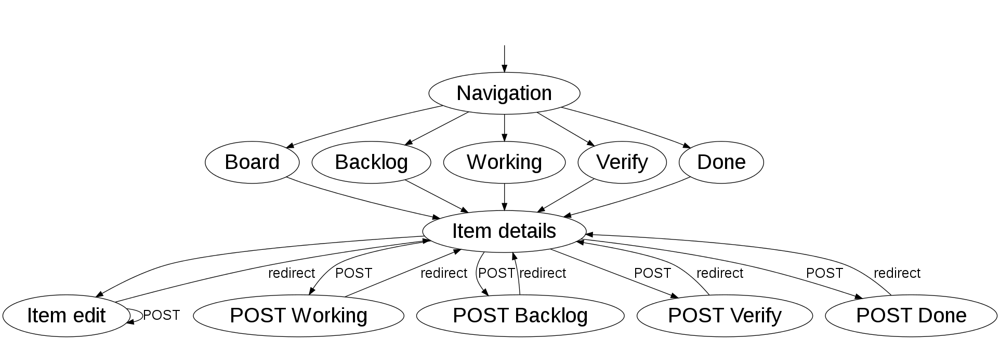
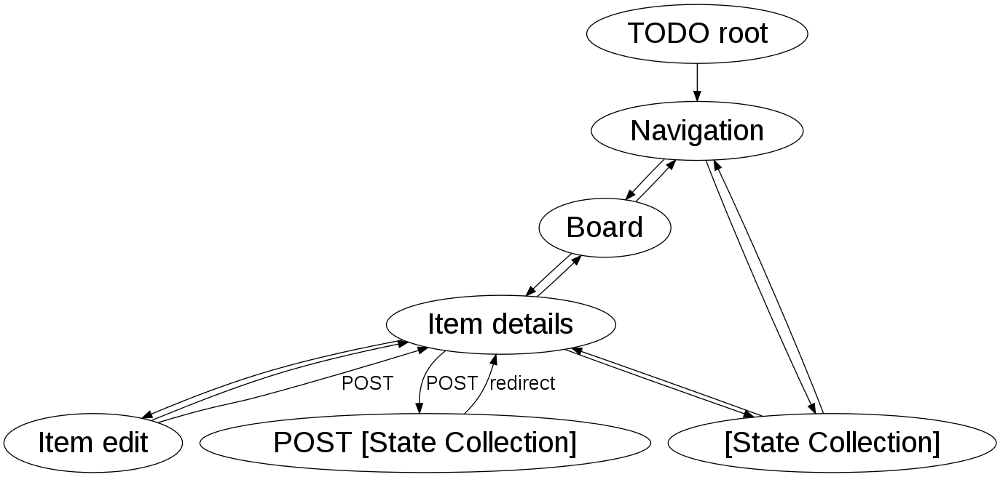
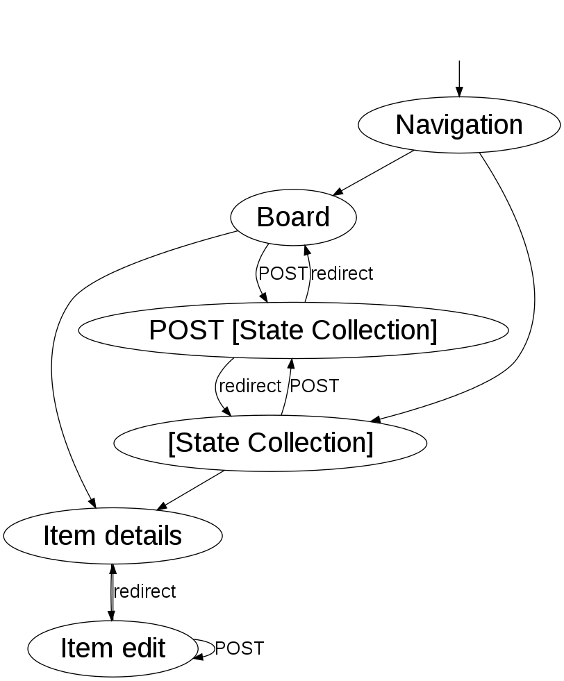
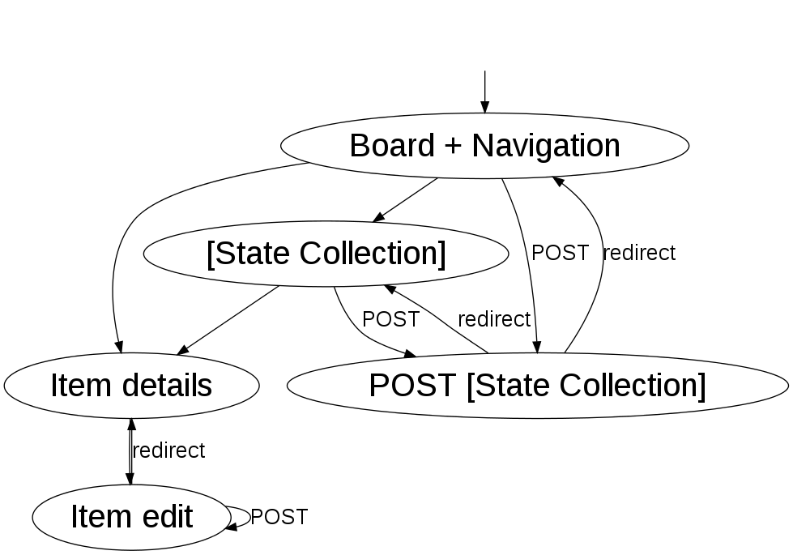
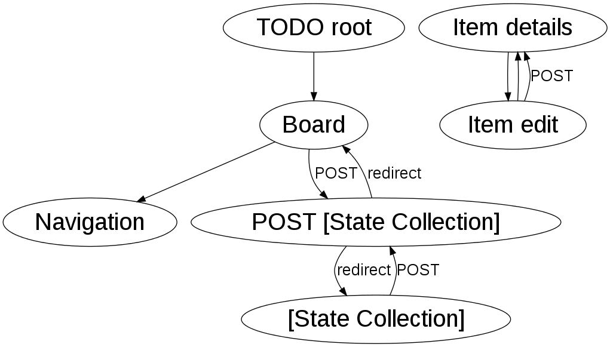
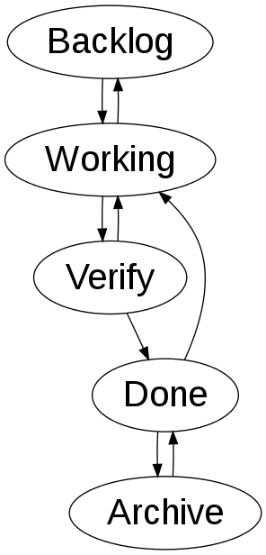

Design Hypermedia APIs
Gustaf Nilsson Kotte / @gustaf_nk
Our task
Design an API for a kanban board.
The API will have multiple clients.
Kanban board

API
GET/POST items/
{
id: 123,
name: "...",
description: "...",
status: "backlog|working|verify|done"
}
Server side: enforce rules
Don't trust clients
Client side: user friendly
- Hide non-valid transitions
- Show primary transitions
- "Read the specification"
Specification
Implement the state machine on the right.
The primary action for each state is the
"downward" arrow, except for the state
"done" where the primary action is
to move the item back to the "working" state.
Client side variations
function nextStates(item) {
if (item.state == 'backlog')
return ['working'];
else if (item.state == 'working')
return ['backlog', 'verify'];
...
}
function getPrimary(state) {
if (item.state == 'backlog')
return 'working';
...
}
Client side variations
function nextStates(item) {
dict = {
'backlog' => ['working'],
'working' => ['backlog, verify'],
...
return dict[item.state];
}
function getPrimary(state) {
if (item.state == 'backlog')
return 'working';
...
}
Client side variations
function nextStates(item) {
dict = {
'backlog' => ['working'],
'working' => ['backlog, verify'],
...
return dict[item.state];
}
function isPrimary(state, nextState) {
return nextState == nextStates(state).last();
}
Client side variations
function nextStates(item) {
var stateMachine = new StateMachine(conf.json);
return stateMachine.getTransitions(item.state);
}
function isPrimary(state, nextState) {
return nextState == nextStates(state).last();
}
Without Hypermedia

Prefer fat APIs over fat clients

 http://martinfowler.com/articles/richardsonMaturityModel.html
http://martinfowler.com/articles/richardsonMaturityModel.html
Hypermedia APIs
What is the Hypermedia Constraint?
You do stuff by reading pages
and then either
follow links or submit forms.
— Jon Moore

Design process
- Evaluate processes
- Create state machine
- Evaluate media types
- Create or choose media types
- Implementation
- Refinements
1. Evaluate processes
1. Evaluate processes
Collections: "board", backlog, working, verify, done
Single: details, edit
Write: being able to change the state of an item
according to the rules
2. Create state machine
First attempt...




3. Evaluate media types
H-factors
H-factors for our API
- LO: Support for out-bound navigational links (HTTP GET)
- LN: Support for non-idempotent updates (HTTP POST)
- CL: Support for adding semantic meaning to link elements using link relations
4. Create or choose media types
- HTML
- HAL
- Collection+JSON
- Siren
- JSON-LD
- Atom
- SVG
- OData
| Name | Summary | Read/write | Comment |
|---|---|---|---|
| HAL | Resources and relations | R | Write support with addon |
| Collection+JSON | Collections over JSON | RW | |
| Siren | ~ JSON port of HTML | RW | |
| JSON-LD | ~ RDF over JSON | R |
Use HTML for Hypermedia APIs
- Lots of hypermedia controls
- Old, standardized, everybody knows HTML
- Good tooling support
More...
- Great for learning about hypermedia!
Example: Microformats2, entities
<li class="h-item">
<div class="p-name"><%= item.name %></div>
<div class="p-status"><%= item.status %></div>
<div class="p-description"><%= item.description %></div>
<div class="p-forms">
...
</div>
<div class="p-links">
...
</div>
</li>
Example: Microformats2, forms
<div class="p-forms">
<form data-rel="move backlog" action="/items/backlog" method="POST">
<input name="id" type="hidden" value="4">
<input title="submit" type="submit" value="Move to backlog">
</form>
<form data-rel="move verify next" action="/items/verify" method="POST">
<input name="id" type="hidden" value="4">
<input title="submit" type="submit" value="Move to verify">
</form>
</div>
5. Implementation
6. Refinements

Done! Just one more thing... :)
Writing a hypermedia aware client
Not harder than writing a "regular" client, just different...
...which means it's harder, since new to many developers :(
Generic vs specific client?
Standardized domain vs walled garden
- "Atom client" vs "Twitter client"
- However, standard media types still have value!
Use the affordances
- Semantics for "things"
- Link relations (navigational state)
- Form relations (server state)
Demo: changing the application

Demo: Ruby console client
Where's the application?
TODO: Where's Waldo image
Summary
Books
Thank you!
Gustaf Nilsson Kotte / @gustaf_nk
Code: https://github.com/gustafnk/kanban-awd-api
Demo: http://kanban-awd.herokuapp.com/ and http://kanban-api.herokuapp.com